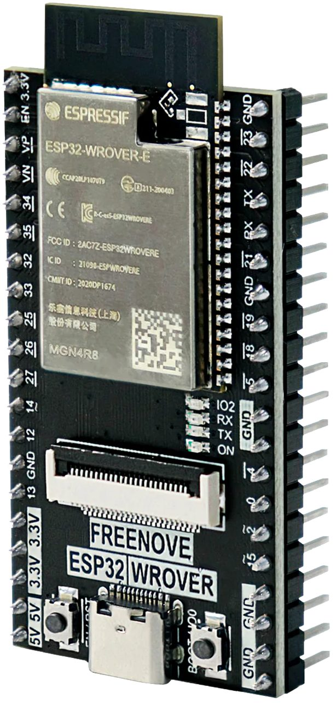
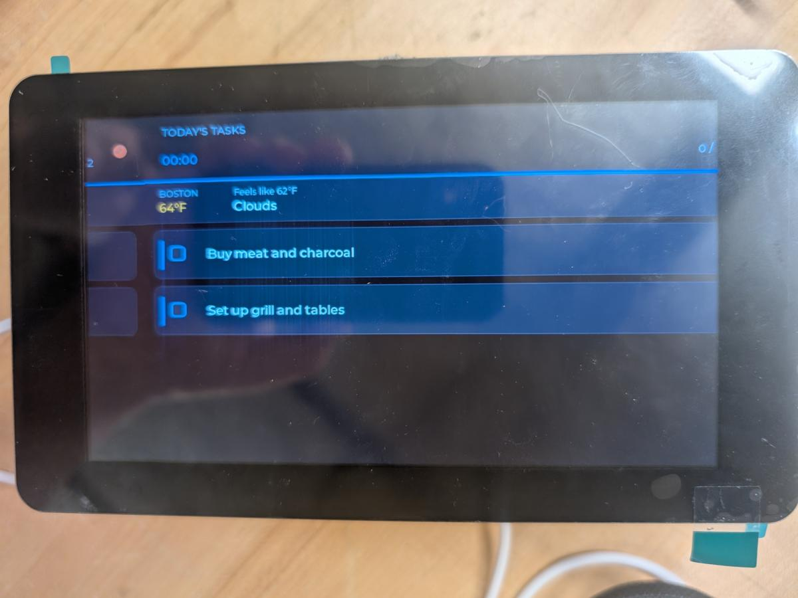
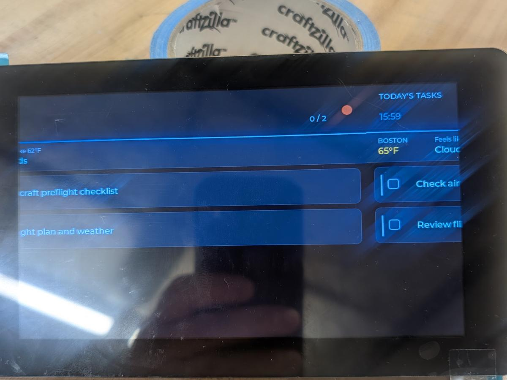
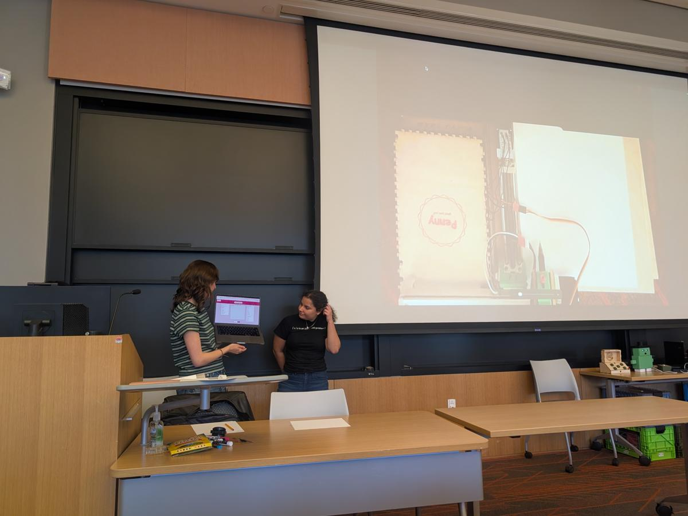

Connect a device to cloud APIs
Adding AI to a device to do smart things — no programming required. Your board asks a service for data or an action, and gets an answer back.

Weather
Ask a weather service for the forecast and have your device react to it.
Music
Control playback or pull track data from a music service.
AI chat
Send speech or text to a model and turn the answer into an action.
Case study: the poetic light
Say a word, and the light recites a related poem while changing to a color that represents it.
The journey, in the order it happened
Describe the idea
Start with one sentence: say a word, get a poem and a color.
Recording won't save
The voice recording can't be written to memory.
SD card struggles
Getting the SD card to work takes many attempts.
Firmware switch
New ESP32 firmware unlocks the full amount of RAM available.
Pulse red like HAL
Test and enhance: pulse red like HAL 9000.
Color switching works
The first feature lands — the light responds to a word.
Add a spoken poem
Feature enhancement: recite the poem out loud.
Fix the audio
The small speaker sounds poor, so a DFPlayer Mini MP3 module joins the build.
Ran out of context
The chat runs out of context before the build is finished.
Read the build conversation
The engineering mindset
Claude looked back at the whole build and named the habits that made it work.
Incremental development
Started simple, added complexity gradually.
Problem decomposition
Broke the system into manageable components.
Iterative debugging
Tested, identified issues, refined solutions.
Constraint recognition
Understood hardware and software limits, then adapted.
Design tradeoffs
Made informed decisions when multiple solutions existed.
Documentation review
Referenced existing code to learn hardware capabilities.
Resource management
Solved memory issues by upgrading firmware.
Feedback-driven development
Used test results to guide the next step.
Your role vs AI
The build worked because each side did what it does best.
Problem framing
Human: Defines the goal, hardware, and constraints
AI: Translates intent into architecture and a code plan
Design & decisions
Human: Chooses the trade-offs, simplifies the system
AI: Suggests multiple implementation options
Diagnostics
Human: Runs tests, identifies root causes
AI: Generates diagnostic tools and fixes
Integration
Human: Manages timing, pin mapping, and system flow
AI: Produces working code and module connections
Validation
Human: Tests and interprets the results
AI: Refines code based on feedback
Optimization
Human: Balances performance, cost, and usability
AI: Automates tuning, surfaces data-driven insights
Documentation
Human: Summarizes lessons and decisions
AI: Formats results, diagrams, and reports
Where humans excel
Systems thinking & constraint recognition
- Detected pin-sharing conflicts that AI initially missed
- Caught logical errors AI couldn't infer from code alone
Diagnostic reasoning
- Found that low memory was a firmware issue, not a coding issue
- Designed and ran diagnostic tools to confirm issues empirically
- Validated AI suggestions against physical hardware behavior
Design judgment & simplification
- Eliminated SD card complexity once the firmware upgrade removed the constraint
Performance & tradeoff optimization
- Quantified “too slow” as “7 seconds” — a measurable metric
- Applied multi-criteria decision matrices (cost, latency, quality)
Engineering integrity
- Maintained pin mapping documentation and version control through iterations
- Directed the AI to restore baseline configurations when code drift occurred
Where AI excels
Rapid implementation
- Produced over 1,200 lines of functional MicroPython in a few hours
- Generated drivers, API calls, and WAV header logic quickly and accurately
- Integrated the Whisper, GPT, and TTS APIs seamlessly
Breadth of knowledge
- Provided hardware-specific setup for ESP32, I2S, SPI, and PWM
- Suggested valid code alternatives when one failed (buffer handling, threading)
Debugging assistance
- Offered step-by-step fixes for exceptions and syntax errors
- Generated diagnostic snippets for the SD card, microphone, and speaker
Documentation & teaching
- Explained underlying causes, like MicroPython subset differences
- Created diagrams, summaries, and performance tables automatically
Acceleration factor
Compressed a 24–35 hour traditional build into 4.5 hours total — roughly a 5–8× faster development cycle.
Best practices for human–AI collaboration
Eight habits to carry into your final project.
Be specific
Clear prompts yield relevant, hardware-aware results.
Show evidence
Share code, errors, or logs so AI can reason, not guess.
Iterate rapidly
Short prompt–test–refine loops beat long single prompts.
Validate everything
Run, test, and verify before integrating it into your system.
Keep context updated
Remind AI of constraints after each major change.
Use diagnostics early
Build quick test scripts to confirm hardware and firmware state.
Simplify continuously
Remove unnecessary layers once constraints are resolved.
Reflect & document
Capture what worked and why — AI learns context, you keep the insight.
Student builds: connected devices
Photos from a class session — the on-screen side of student-built connected devices.



Before you go
Submit a self-reflection before end of day.
Self-reflection
Office hours
Course materials
tuftsmaker.github.io/ENT-164